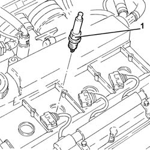
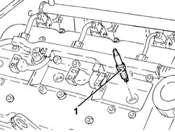
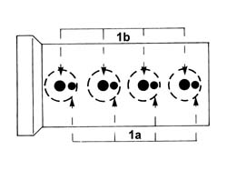

5510D10 SPARK PLUGS - R+R
- Path
- Procedures > 55 ELECTRICAL EQUIPMENT > 5510 ENGINE IGNITION > 5510D SPARK PLUGS AND LEAD > 5510D10 SPARK PLUGS - R+R
- Kind
- repair procedure (removal / refitting; the operation number is the code)
- Applies to
- engines: 1.8 T.SPARK, 2.0 JTS, 3.2 V6; all production periods
- Interactive page
- https://sloeber94.github.io/elrnDB-aGt/en/#/125001613
Applies to: engines: 2.0 JTS; all production periods
 Removing
Removing
 Refitting
RefittingMake sure that the ignition key is in the OFF position, then disconnect the battery terminal (-).
Description | Connector | |
|---|---|---|
- | Battery | See A1B BATTERY ( BATTERY NEGATIVE ) |
Proceed with the removal
Op. 1016A40 IGNITION COIL COVER ON CYLINDER HEAD- R+R.
Proceed with the removal
Op. 5510C14 IGNITION COIL/S - R+R.
1. Unscrew the heater plugs and remove them.

Applies to: engines: 2.0 JTS; all production periods
Refitting
RemovingFit the spark plugs and tighten them to the recommended torque.
Fastening | Component | Ø | Value (daNm) | |
|---|---|---|---|---|
- | - | - | - | - |
Proceed with the refitting
Op. 5510C14 IGNITION COIL/S - R+R.
Proceed with the refitting
Op. 1016A40 IGNITION COIL COVER ON CYLINDER HEAD- R+R.
Connect the negative battery terminal (-).
Applies to: engines: 3.2 V6; all production periods
Removing
RefittingMake sure that the ignition key is in the OFF position, then disconnect the battery terminal (-).
Description | Connector | |
|---|---|---|
- | Battery | See A1B BATTERY ( BATTERY NEGATIVE ) |
Proceed with the removal
Op. 1016A42 LEFT HAND CYLINDER HEAD IGNITION COIL COVER - R+R.
Proceed with the removal
Op. 5510C16 LEFT HAND CYLINDER HEAD IGNITION COIL - R+R.
Proceed with the removal
Op. 1072B50 SLEEVES CONNECTING AIR CAPACITY BOX TO INLET MANIFOLD IS - R+R.
Proceed with the removal
Op. 5510C18 RIGHT HAND CYLINDER HEAD IGNITION COIL - R+R.
Blow air into the spark plug housings and remove any impurities or traces of dirt.
1. With the engine cold, unscrew the spark plugs and remove them.

Applies to: engines: 3.2 V6; all production periods
Check the state of the spark plugs and replace them, if necessary.
Applies to: engines: 3.2 V6; all production periods
Refitting
RemovingFit the spark plugs and tighten them to the recommended torque.
Fastening | Component | Ø | Value (daNm) | |
|---|---|---|---|---|
- | - | SPARK PLUGS | M14 | (Cylinder head side) 2.4 - 3.0 |
Proceed with the refitting
Op. 5510C18 RIGHT HAND CYLINDER HEAD IGNITION COIL - R+R.
Proceed with the refitting
Op. 1072B50 SLEEVES CONNECTING AIR CAPACITY BOX TO INLET MANIFOLD IS - R+R.
Proceed with the refitting
Op. 5510C16 LEFT HAND CYLINDER HEAD IGNITION COIL - R+R.
Proceed with the refitting
Op. 1016A42 LEFT HAND CYLINDER HEAD IGNITION COIL COVER - R+R.
Connect the negative battery terminal (-).
Applies to: engines: 1.8 T.SPARK; all production periods
Removing
Refitting- Make sure that the ignition key is in the OFF position, then disconnect the battery terminal (-).
- Op. 1016A40 IGNITION COIL COVER ON CYLINDER HEAD- R+R
- Op. 5510C14 IGNITION COIL/S - R+R
- Blow air into the spark plug housings and remove any impurities or traces of dirt.
- With the engine cold, undo the small side spark plugs (1a) and the large centre spark plugs (1b) and remove them.

Applies to: engines: 1.8 T.SPARK; all production periods
- Check the state of the spark plugs and replace them, if necessary.
Applies to: engines: 1.8 T.SPARK; all production periods
Refitting
Removing- Fit the spark plugs and tighten them to the recommended torque.
Fastening | Component | Ø | Value (daNm) | |
|---|---|---|---|---|
- | - | SIDE SPARK PLUG | M10 | (Cylinder head side) 1.0 - 1.3 |
Fastening | Component | Ø | Value (daNm) | |
|---|---|---|---|---|
- | - | CENTRE SPARK PLUG | M10 | (Cylinder head side) 2.3 - 2.8 |
- Op. 5510C14 IGNITION COIL/S - R+R
- Op. 1016A40 IGNITION COIL COVER ON CYLINDER HEAD- R+R
- Connect the negative battery terminal (-).
Topics linked from this page (6)
- 1016A40 IGNITION COIL COVER ON CYLINDER HEAD- R+R
- 1016A42 LEFT HAND CYLINDER HEAD IGNITION COIL COVER - R+R
- 1072B50 SLEEVES CONNECTING AIR CAPACITY BOX TO INLET MANIFOLD IS - R+R
- 5510C14 IGNITION COIL/S - R+R
- 5510C16 LEFT HAND CYLINDER HEAD IGNITION COIL - R+R
- 5510C18 RIGHT HAND CYLINDER HEAD IGNITION COIL - R+R
Topics that link to this page (10)
- B10 ENGINE DOES NOT START / UNDER NO CIRCUMSTANCES
- B13 ENGINE STARTS WITH DIFFICULTY'
- D01 ENGINE NOT RUNNING SMOOTHLY / (HESISTANT)
- D02 ENGINE NOT RUNNING SMOOTHLY / (LOSING POWER)
- D03 ENGINE NOT RUNNING SMOOTHLY / (IRREGULAR OPERATION)
- D05 ENGINE DOES NOT PRODUCE BEST PERFORMANCE
- D10 ENGINE IDLE IRREGULAR
- X01 EXCESSIVE FUEL CONSUMPTION
- Z54 MISFIRE ERROR IN ONE CYLINDER
- 0010M01 100,000KM SERVICE COUPON, EMISSION CONTROL VERSIONS